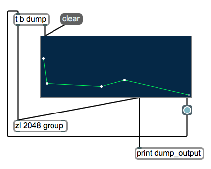
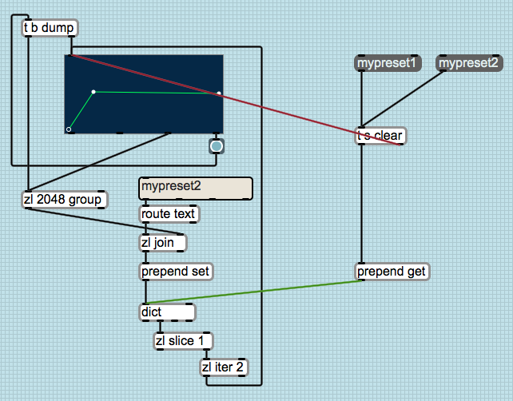
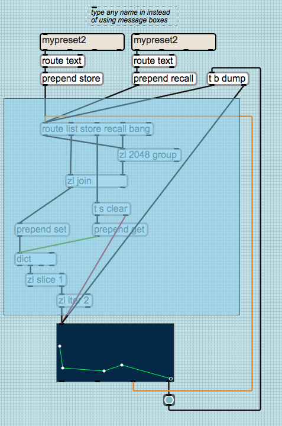
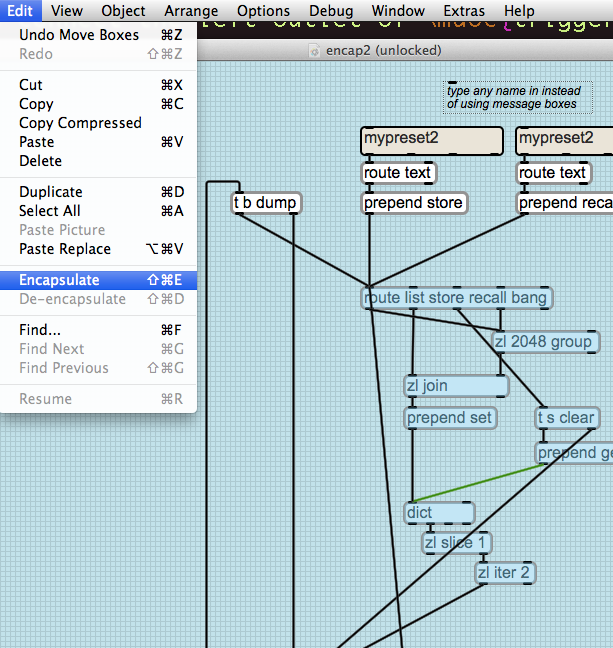
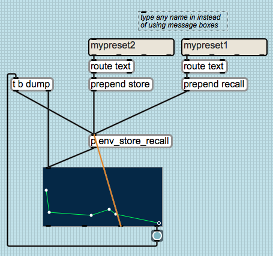
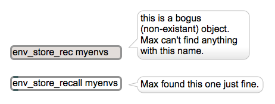

CNMAT Max/MSP Summer Workshop 2012
Lab Assignment 3
August 24, 2012
Summary
In this lesson, we will create a data storage and retrieval mechanism. We’ll use the [function ] object as
our model, so that we can build up envelopes. These envelopes will eventually help us to make
interesting sounds, but for now let’s focus on building an interesting function storage/recall
tool.
Topics
transfer functions, data storage, data recall, encapsulation, abstraction.
Objects Introduced
[function ], [textedit ], [line ], [route ], [zl ], [prepend ], [trigger ], [line~ ]
Relevant Tutorials
Basic
-
1.
- Abstraction
-
2.
- Data Collections
-
3.
- Procedural Drawing (using line)
MSP
-
1.
- Additive Synthesis (including Envelopes)
1 Data Collection, Storage, and Recall
1.1 Data Collection
-
1.
- Open up a new patch window
-
2.
- Place a new [function ] object into the patch (type “n” for “new object”, type in the word
“function”, and hit “enter”. You should see a new box appear in your patch).
-
3.
- Lock the patch, and try drawing some shapes by clicking in the box with your cursor. To erase
the points you have made, create a message, and patch it to the inlet of the [function ]
object.
-
4.
- Place a new [trigger bang dump] object into the patch (remember that “trigger” can be
abbreviated as “t”), and connect its rightmost outlet (the one associated with “dump”) to
the inlet of the [function ] object.
-
5.
- Place a new [button ] object in your patch, and connect the rightmost outlet of the [function ]
object to the inlet of the [button ] object (this outlet will output a when we mouse up
after a click). Then, connect the outlet of the [button ] object to the inlet of the [trigger ]
object.
-
6.
- Create a [zl 2048 group] object ,
and connect the leftmost outlet (bang) of the [trigger ] object to left inlet of the [zl 2048
group] object.
-
7.
- Now connect the 3rd outlet of the [function ] object to the left inlet of the [zl 2048 group]
object. When the [function ] object receives a message, the third outlet will output all of
the points that it contains in successive lists of (x,y) pairs. We want to collect these into a
single list which we can accomplish with [zl 2048 group]. Once the [function ] object is done
outputting our coordinates, we will send a bang to [zl 2048 group], which will output them
all into one long list.
Your patch should now look something like this:

Let’s pause for a second to review what we’ve just done:
- We click the [function ] object to add a new point (or to modify an existing point)
- We let go of the mouse button (this is called a “mouseup” event)
- A bang is issued from the [function ] object’s right outlet as a result of the mouseup
- The bang is sent to the [trigger ] object’s inlet
- [trigger ] first tells the [function ] object to dump its contents, then once ALL of the contents
are dumped, it tells [zl 2048 group] to output its contents
1.2 Data Storage
Since our data is now bundled together via [zl 2048 group], we can easily send it to [dict ] to store it as
the values in an index but there’s one issue: how do we create indices for these data? Let’s use a handy
mode of [zl ] called “join”, which joins two lists together. We’ll join our data together with a one element
list that describes the data. Something like
| ⌈ | mydata 0.1 0.3 44.41 33.1 | ⌉ |
| ⌊ | ⌋ |
. This functionality is very similar to that of [pack ], [pak ],
and [prepend ]. How would you achieve the same basic functionality using the prepend object instead of
[zl join]?
-
1.
- Create a [zl join] object.
-
2.
- Connect the lefmost outlet of [zl 2048 group] to the right inlet of [zl join].
Now we need a way to get the names of our indices (preset names) into the left inlet of
[zl join]. For this task, we can use a [textedit ] object.
-
3.
- Create a new [textedit ] object.
-
4.
- Create a new [route ] object, with the argument “text”, as in [route text].
-
5.
- Go into the [textedit ] object’s inspector, and check the attribute labeled “Return Enters
Text”.
-
6.
- Connect the left outlet of the [textedit ] object to the left inlet of [route ].
-
7.
- Connect the left outlet of [route text] to the left inlet of [zl join].
Each time we click, a new set of points are sent into [zl 2048 group], and then into [zl join].
After a list leaves [zl 2048 group], the object is cleared and ready for a new set of points. In
this way we are building up lists to store into the right inlet of [zl join] as we edit functions,
and once we have finished editing, we can enter in a descriptor for that particular [function ].
When we enter in this text, it gets output together with the larger list.
Now we just need to make sure that we give the correct storage message to dict. Our current
messages would read
| ⌈ | myPresetName 0.1 0.3 44.41 33.1 | ⌉ |
| ⌊ | ⌋ |
, but we really need
| ⌈ | set myPresetName 0.1 0.3 44.41 33.1 | ⌉ |
| ⌊ | ⌋ |
. If you’d like to know more about guidelines for storage of data in [dict ], refer to the
object’s help file.
-
8.
- Create a new [prepend ] object, and give it an argument, so that it reads: [prepend set]. Also
create a new [dict ] object.
-
9.
- Connect the outlet of [zl join] to the inlet of the [prepend set] object.
-
10.
- Connect the outlet of the [prepend set] object to the inlet of the [dict ] object.
-
11.
- Create a new [zl slice 1] object. This will route off the preset name from the response dict
issues from a ’get’ message (We’ll cover this later).
-
12.
- Create a new [zl iter 2] object. This is going to allow us to break our singular list back up
into xy pairs, which can then be sent back to the [function ] object to restore our saved
preset.
-
13.
- Connect the 2nd outlet of the [dict ] object to the left inlet of the [zl slice 1] object.
-
14.
- Connect the right outlet of the [zl slice 1 ] object (everything but the name of our preset) to
the left inlet of the [zl iter 2] object.
-
15.
- Connect the left outlet of [zl iter 2] to the inlet of the [function ] object.
Now we are ready to test our preset system.
-
16.
- Draw a function in the [function ] object, then give it a name. Create a few more functions and
give them unique names (you can clear the [function ] object by sending it the message).
-
17.
- Double-click on the [dict ] object to see its contents. Do you see your two presets? If not, go
back to the previous steps to review.
1.3 Data Recall
Stop and take a moment to make sure everything is functioning as expected. If so, let’s move on to
recalling our presets.
-
1.
- Create two new message boxes containing two of the function names you have chosen.
-
2.
- Create a new [trigger ] object like so: [trigger s clear], and connect the outlet of the
message to the inlet of [trigger s clear]. Do the same for the other.
-
3.
- Connect the right outlet of [trigger s clear] (the message) to the inlet of [function ].
-
4.
- Connect the middle outlet of [trigger s clear] (“s” stands for “symbol” and will pass your
preset name through) to the inlet of [dict ], which will call up the data for that particular
preset name.
-
5.
- Create a new [prepend ] object like so: [prepend get], and connect its outlet to the left inlet
of the [dict ] object.
-
6.
- Connect the left outlet of [trigger s clear] to the inlet of [prepend get], which will call up the
data for that particular preset name.
-
7.
- Lock the patch, and notice that when you click back and forth between presets that the
[function ] object clears properly before accepting new data, and that our presets are restored
properly.
Your patch should now look something like the following:

2 Encapsulation
So how can we encapsulate this? Let’s start by figuring out what portions of our patch we would like to be
within a subpatcher. Here are the relevant objects:
2.1 Re-routing
One way to make the process of encapsulation easier is to program the encapsulation depth first; that is,
to patch as though you’re already inside of a subpatcher. In this case, we might want a [route ] object to
act as a catch-all for our various instructions and data types. As we’ll see momentarily, [route ] can
handle the various types of input we’ll want all in one inlet, instead of having too many inlets to label and
keep track of. Keep in mind that we’d like our module to respond to special messages like
, , and . Let’s also include lists. Make a new object like so: [route list store recall
bang].
Let’s break the following connections:
-
1.
- Disconnect [function ] from [zl 2048 group]
-
2.
- Disconnect the “bang” outlet of [trigger b dump] from [zl 2048 group]
-
3.
- Delete any containing preset names (We’ll add a feature here making these obsolete).
-
4.
- Disconnect the outlet of [route text] from [zl join]
Now add some new objects:
-
1.
- Create a new [prepend store] object.
-
2.
- Connect your [route text] object’s left outlet to the inlet of this new [prepend store] object.
-
3.
- Duplicate this object chain ([textedit ], [route text], [prepend store]).
-
4.
- Rename the [prepend store] to [prepend recall], and connect both [prepend recall] and
[prepend store] to the left inlet of [route list store recall bang].
-
5.
- Connect the left outlet of [trigger bang dump] to [route list store recall bang].
-
6.
- Make sure that the right outlet of [trigger bang dump] is still going to the [function ] object.
Finally, we’ll make the new [route ] connections:
-
7.
- Connect [route ]’s bang outlet to [zl 2048 group]’s left inlet
-
8.
- Connect [route ]’s list outlet to [zl 2048 group]’s left inlet
-
9.
- Connect [route ]’s store outlet to [zl join]’s left inlet
-
10.
- Connect [route ]’s recall outlet to [trigger s clear]’s inlet
2.2 Patch to subpatch
Now select all relevant objects for encapsulation, like so:

Choose “Edit / Encapsulate” to encapsulate
the contents: 
Let’s rename this subpatcher to have a name that we’ll remember. In our case, we should name it
“env_store_recall”, as we’ll be using this particular filename later:

3 Abstraction
Take a minute to make sure that everything is working with your new subpatcher. If you are
satisfied, move on to making this handy utility an abstraction so that we can use many of them
easily:
-
1.
- Double-click on [patcher env_store_recall].
-
2.
- Give [dict ] a changeable argument via the # sign, like so: [dict #1]
-
3.
- Choose “File / Save-as...”, and save the file to disk inside of your max enabled folder (Notice
that the filename is drawn from the edited subpatcher name).
-
4.
- To test whether or not the file is now seen by Max, name a new object and type
“env_store_recall” as the name:
-
5.
- Try giving your abstraction a unique name, such as “myenvs” or similar, like so:
[env_store_recall myenvs]. Notice that you can have many abstractions with different names.
These abstractions will refer to different envelope data sets.

If you’d like, feel free to copy the “cnmat_function_manager.maxhelp” file and replace the abstraction’s
name there with our lesson’s name (“env_store_recall”). Now you’re ready to create, manage, and use
many envelopes. Think about how this lesson might relate to other objects, in terms of managing their
state.